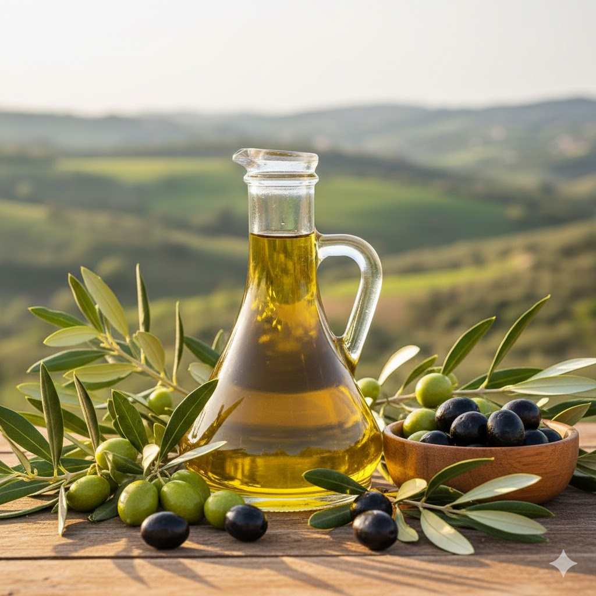
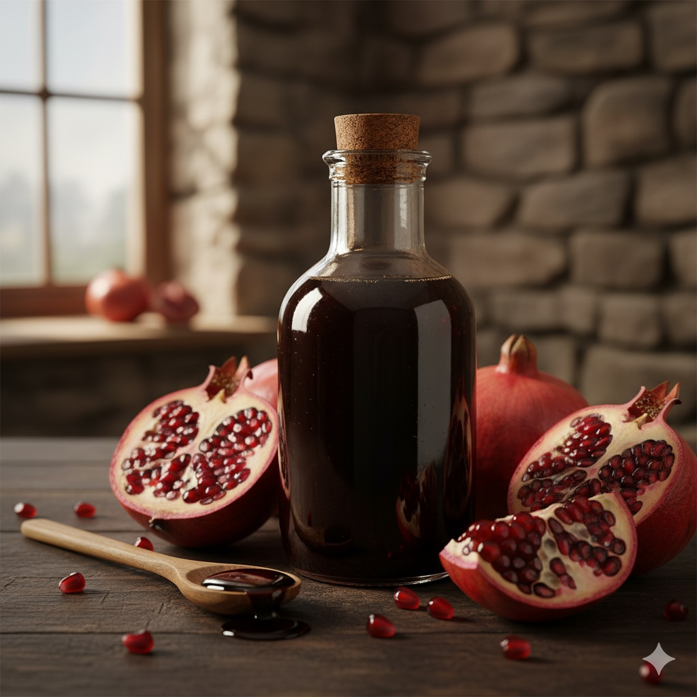
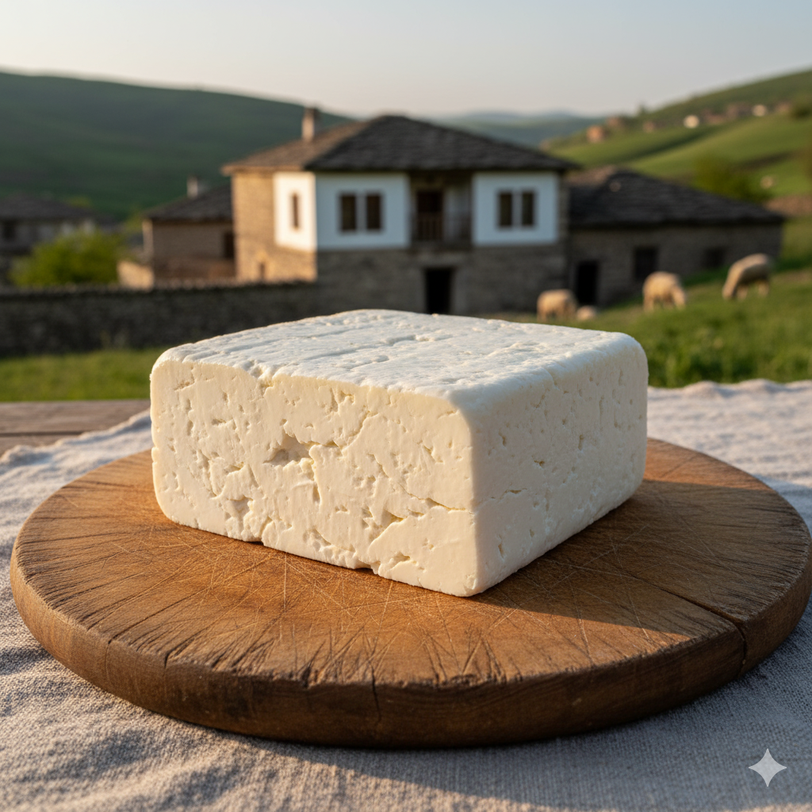
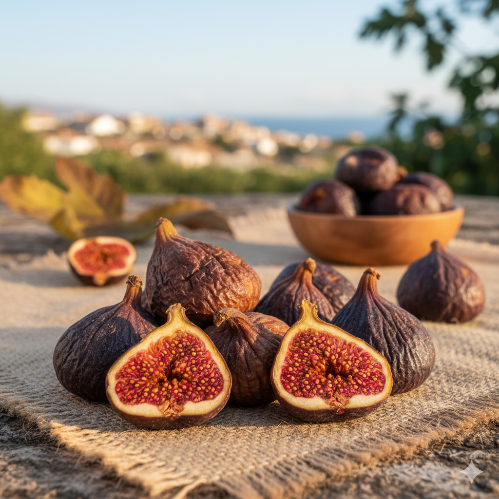
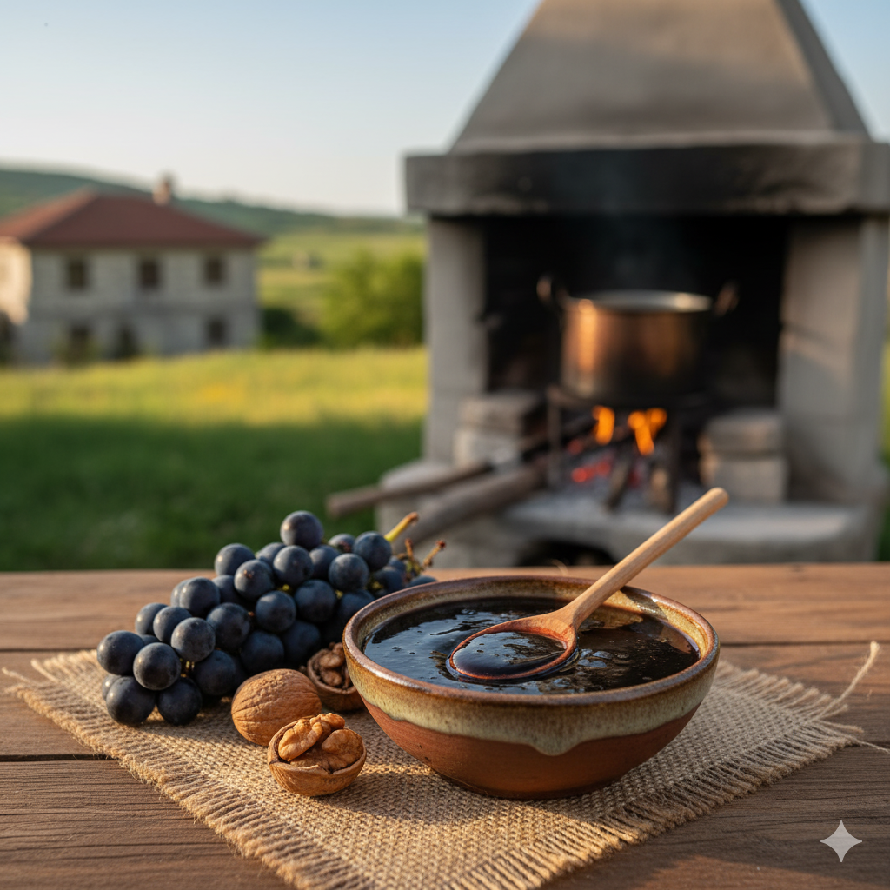
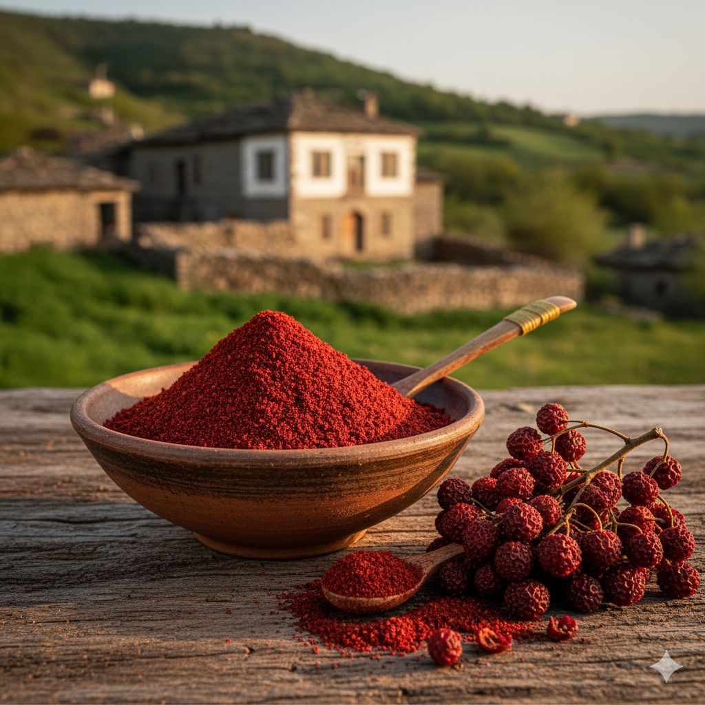

Hatay Şenköy Bahçemizden Sofranıza
Katkısız, doğal ve gelensek lezzetler. Sınırlı üretim zeytinyağı ve nar ekşisi.
Sipariş VerinBizim Hikayemiz
Bu bahçe, bizim köklerimiz. Hatay Şenköy'ün bereketli topraklarında, rüzgar değirmenlerinin daimi şahitliğinde uzanan, bize ailemizden kalan en değerli miras.
6 Şubat 2023'te yaşadığımız o büyük acı, hayatımızı sonsuza dek değiştirdi. Kaybettiğimiz canlarımızın paha biçilmez anılarını yaşatmanın, onların bu topraklara, bu zeytin ağaçlarına olan sevgisini ve emeğini devam ettirmenin bir yolunu aradık.
Cevabı, tam da bu bahçede bulduk. Her zeytin ağacının gölgesinde, her nar tanesinin lezzetinde...
Bizim için bu iş, bir ticaretten çok daha fazlası; bu, bir vefa borcu ve bir anı yaşatma biçimi.
Doğallıktan günden güne uzaklaştığımız, gıdanın şifasını unuttuğumuz bu günlerde, misyonumuz net: Size en doğalını, en sadesini ve en şifalısını ulaştırmak. Tıpkı ailemizin yıllardır yaptığı ve arzuladığı gibi.
Bu yüzden ürünlerimiz "endüstriyel" değil, "bizzat kendimize ait". Bu yüzden üretimimiz "sınırlı sayıda".
Biz size bir şişe zeytinyağı veya nar ekşisi değil; "bahçeden sofraya" uzanan bir samimiyet, bu toprağın şifasını ve en önemlisi, kaybettiklerimizin bu bahçede yaşamaya devam eden anılarını sunuyoruz.
Bu misyona başlarken, Şenköy'ün bereketini sadece kendi bahçemizle sınırlı tutmak istemedik. Kendi ürünlerimizin yanı sıra, köy halkımızın, bizzat tanıdığımız ve güvendiğimiz komşularımızın emeğiyle ürettiği %100 doğal ve güvenilir lezzetleri de sizlerle buluşturuyoruz.
Ürünlerimiz
Bizim Bahçemizden

Doğal Zeytinyağı (1L)
Kendi zeytin ağaçlarımızdan, mevsiminde elle toplanan zeytinlerden elde edilen soğuk sıkım, düşük asitli zeytinyağı.

Katkısız Nar Ekşisi (500g)
Bahçemizin narlarından, odun ateşinde, sadece nar suyu kaynatılarak elde edilen, yoğun kıvamlı, %100 doğal nar ekşisi.
Köyümüzden Güvendiklerimiz

Şenköy Peyniri (1Kg)
Köyümüzün en meşhur lezzeti. Geleneksel yöntemlerle, doğal mayayla hazırlanan taze ve lezzetli peynirimiz.

Kuru İncir (1Kg)
Güneşte doğal yollarla kurutulmuş, tatlı ve besleyici dağ incirleri. Katkısız ve şeker ilavesizdir.

Pekmez (1Kg)
Köyümüzün üzüm veya keçiboynuzu meyvelerinden, odun ateşinde kaynatılarak elde edilen %100 doğal pekmez.

Sumak (250g)
Dağlarımızdan toplanan sumak meyvelerinden doğal yöntemlerle çekilmiş, yemeklerinize ekşilik katacak saf sumak.
Sizden Gelenler
Ürünlerimizi deneyimleyen misafirlerimizin yorumları. Siz de deneyimlerinizi paylaşarak bize destek olabilirsiniz.
Sıkça Sorulan Sorular
Sipariş listenizi WhatsApp üzerinden bize ilettikten sonra, size ödeme için IBAN bilgilerimizi iletiyoruz. Ödemenizi Havale/EFT yoluyla güvenle yapabilirsiniz.
Siparişinizi onayladıktan sonra, ürünlerinizi özenle paketleyip (kırılacaklar için özel koruma ile) en geç 2 iş günü içinde anlaşmalı kargo firmamıza teslim ediyoruz. Kargo takip numaranızı sizinle paylaşıyoruz.
Zeytinyağı: Serin, kuru ve doğrudan güneş ışığı almayan bir yerde, ağzı kapalı şekilde saklayınız.
Nar Ekşisi: Buzdolabında veya serin bir yerde muhafaza edebilirsiniz.
Şenköy Peyniri: Size ulaştıktan sonra buzdolabında saklamalısınız.
Kuru İncir & Sumak & Pekmez: Serin ve nemsiz bir dolapta, ağzı kapalı olarak saklayabilirsiniz.
Lezzeti Evinize Taşıyın
Aklınızda soru işareti kalmadıysa, sipariş listenizi oluşturup aşağıdaki butona tıklayarak bize WhatsApp üzerinden ulaşabilirsiniz.
Sipariş Listemi GönderVeya bizi sosyal medyadan takip edin: Instagram